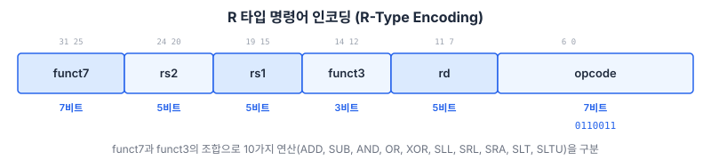
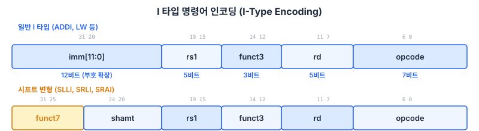
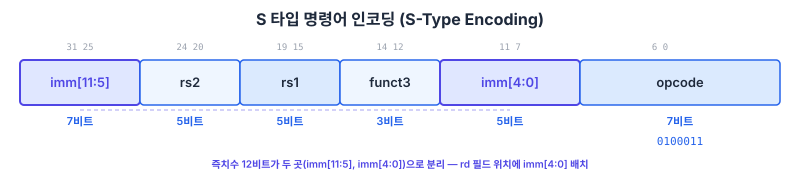
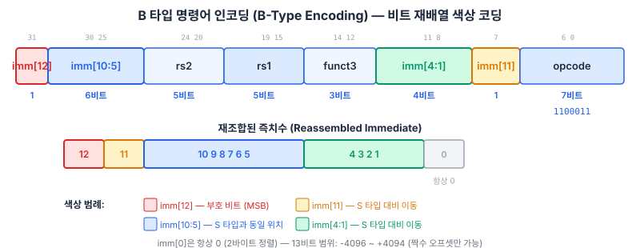
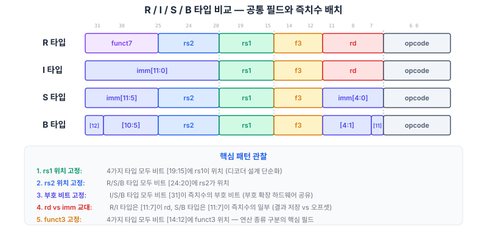
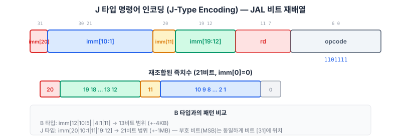

RV32I의 37개 명령어를 6가지 인코딩 타입별로 완전 분석한다. 각 명령어의 비트 필드 구조를 이해하면, 이후 Chapter 06에서 설계할 디코더의 입력 스펙이 완성된다.
Chapter 02에서 RISC-V 아키텍처의 전체 그림을 조망하였다. 32개의 범용 레지스터(General-Purpose Register), 프로그램 카운터(Program Counter, PC), 그리고 6가지 명령어 타입의 존재를 확인하였다. 이제 본격적으로 각 명령어의 내부를 들여다볼 차례이다.
"명령어를 하나씩 분석하는 것이 정말 필요한가?"라는 질문이 자연스럽게 떠오를 수 있다. 이에 대한 답은 명확하다. 디코더(Decoder)를 설계하려면, 모든 명령어의 인코딩을 정확히 알아야 한다. Chapter 06에서 우리가 만들 명령어 디코더는 32비트 명령어를 입력으로 받아, "이 명령어가 무엇인지, ALU는 어떤 연산을 해야 하는지, 레지스터 파일에 쓸 것인지, 메모리에 접근할 것인지"를 결정하는 핵심 모듈이다. 디코더의 입력 스펙이 곧 이 챕터에서 분석하는 명령어 인코딩 표이다.
이 챕터의 분석 결과가 어디에 활용되는지 구체적으로 살펴보자. Chapter 06에서 설계할 디코더는 대략 다음과 같은 구조를 갖는다: 먼저 opcode(비트 [6:0])를 확인하여 명령어 타입을 판별하고, funct3(비트 [14:12])로 세부 연산을 구분하며, 필요한 경우 funct7(비트 [31:25])까지 확인하여 최종 제어 신호를 생성한다. 이 과정에서 "opcode 값이 무엇이면 어떤 타입인지, funct3 값에 따라 어떤 연산인지"를 정확히 아는 것이 전제 조건이다. 그것이 바로 이 챕터에서 정리하는 내용이다.
RV32I에는 총 37개의 기본 명령어가 있다. 47개라는 숫자가 보이는 자료도 있으나, 이는 의사 명령어(Pseudo Instruction)를 포함한 경우이다. 37개라는 숫자도 적지 않게 느껴질 수 있지만, 핵심은 인코딩 패턴이 6가지뿐이라는 사실이다.
이 챕터는 다음과 같은 전략으로 진행된다.
이 챕터를 처음 읽을 때는 각 명령어의 세부 인코딩을 모두 암기하려 하지 않아도 된다. 중요한 것은 타입별 패턴을 파악하는 것이다. 예를 들어, "R 타입은 funct7, rs2, rs1, funct3, rd, opcode 순서로 배치된다"는 패턴 하나를 기억하면, 10개의 R 타입 명령어 각각의 인코딩은 표를 참조하여 즉시 찾을 수 있다. Appendix A의 레퍼런스 카드와 함께 읽으면 효과적이다.
또한, 각 절 끝에 있는 "스스로 점검" 질문에 반드시 답해 보기를 권한다. 이 질문들은 핵심 개념의 이해 여부를 확인하기 위한 것이며, 답을 틀려도 전혀 문제가 없다. 중요한 것은 능동적으로 생각하는 과정 자체이다.
자, 이제 첫 번째 타입인 R 타입부터 시작하자. 가장 직관적인 형식이므로, 명령어 분석의 감을 잡기에 최적이다.
R 타입(Register Type)은 두 개의 소스 레지스터(rs1, rs2)에서 값을 읽고, 연산 결과를 목적 레지스터(rd, Destination Register)에 기록하는 명령어 형식이다. 즉치수(Immediate)가 없으므로, 모든 피연산자가 레지스터에서 직접 공급된다. "R"은 Register의 약자이며, 가장 기본적인 산술·논리 연산을 담당한다.

R 타입의 32비트 명령어는 6개의 필드로 구성된다.
| 필드 | 비트 위치 | 비트 수 | 역할 |
|---|---|---|---|
funct7 | [31:25] | 7 | 연산 종류 확장 (ADD vs SUB 등을 구분) |
rs2 | [24:20] | 5 | 두 번째 소스 레지스터 번호 (0~31) |
rs1 | [19:15] | 5 | 첫 번째 소스 레지스터 번호 (0~31) |
funct3 | [14:12] | 3 | 연산 종류 구분 (기본 분류) |
rd | [11:7] | 5 | 목적 레지스터 번호 (0~31) |
opcode | [6:0] | 7 | 명령어 타입 식별: 0110011 |
디코더 관점에서 보면, 먼저 opcode가 0110011인지 확인하여 R 타입임을 판별한다. 그 다음 funct3로 대분류를 하고, 필요한 경우 funct7로 세부 구분을 한다. 예를 들어, ADD와 SUB는 funct3가 동일하게 000이지만, funct7이 각각 0000000과 0100000으로 다르다.
| 명령어 | 동작 | funct7 | funct3 | 설명 |
|---|---|---|---|---|
ADD | rd = rs1 + rs2 | 0000000 | 000 | 덧셈 |
SUB | rd = rs1 − rs2 | 0100000 | 000 | 뺄셈 |
SLL | rd = rs1 << rs2[4:0] | 0000000 | 001 | 논리 좌측 시프트(Shift Left Logical) |
SLT | rd = (rs1 <s rs2) ? 1 : 0 | 0000000 | 010 | 부호 있는 비교(Set Less Than) |
SLTU | rd = (rs1 <u rs2) ? 1 : 0 | 0000000 | 011 | 부호 없는 비교(Set Less Than Unsigned) |
XOR | rd = rs1 ^ rs2 | 0000000 | 100 | 배타적 논리합(Exclusive OR) |
SRL | rd = rs1 >>u rs2[4:0] | 0000000 | 101 | 논리 우측 시프트(Shift Right Logical) |
SRA | rd = rs1 >>s rs2[4:0] | 0100000 | 101 | 산술 우측 시프트(Shift Right Arithmetic) |
OR | rd = rs1 | rs2 | 0000000 | 110 | 논리합(OR) |
AND | rd = rs1 & rs2 | 0000000 | 111 | 논리곱(AND) |
위 표에서 주목할 점은 funct7이 0100000인 명령어가 정확히 두 개(SUB, SRA)라는 것이다. 나머지 8개는 모두 0000000이다. 하드웨어 구현 관점에서 이것은 매우 중요한 의미를 갖는다. funct7[5], 즉 비트 30 한 자리만 확인하면 ADD/SUB, SRL/SRA를 구분할 수 있다. 전체 7비트를 비교할 필요가 없으므로, 디코더 로직이 단순해진다.
// R 타입 디코더 핵심 로직 (미리보기 — 상세 구현은 Ch06)
always_comb begin
case (funct3)
3'b000: alu_op = funct7[5] ? ALU_SUB : ALU_ADD; // ADD vs SUB
3'b001: alu_op = ALU_SLL;
3'b010: alu_op = ALU_SLT;
3'b011: alu_op = ALU_SLTU;
3'b100: alu_op = ALU_XOR;
3'b101: alu_op = funct7[5] ? ALU_SRA : ALU_SRL; // SRL vs SRA
3'b110: alu_op = ALU_OR;
3'b111: alu_op = ALU_AND;
endcase
end
SLL, SRL, SRA에서 시프트량은 rs2[4:0], 즉 rs2의 하위 5비트만 사용한다. 32비트 레지스터를 최대 31비트까지 시프트할 수 있으므로 5비트면 충분하다. rs2의 상위 27비트는 무시된다. 이 규칙은 I 타입 시프트 명령어(SLLI, SRLI, SRAI)에서도 동일하게 적용되며, 다음 절에서 확인할 것이다.
I 타입(Immediate Type)은 R 타입에서 rs2 자리에 12비트 즉치수(Immediate)를 배치한 형식이다. "상수를 포함하는 연산"과 "메모리에서 데이터를 읽어오는 로드(Load) 명령어"가 모두 이 타입에 속한다. 하나의 소스 레지스터(rs1)와 즉치수의 조합으로 결과를 생성하여 rd에 기록한다.

I 타입은 R 타입의 funct7과 rs2 필드를 합쳐 하나의 12비트 즉치수 필드 imm[11:0]로 사용한다. 이 즉치수는 부호 확장(Sign Extension)되어 32비트로 확장된 후 연산에 사용된다. 따라서 12비트로 표현 가능한 범위는 -2048부터 +2047까지이다.
| 필드 | 비트 위치 | 비트 수 | 역할 |
|---|---|---|---|
imm[11:0] | [31:20] | 12 | 즉치수 (부호 확장) |
rs1 | [19:15] | 5 | 소스 레지스터 |
funct3 | [14:12] | 3 | 연산 종류 구분 |
rd | [11:7] | 5 | 목적 레지스터 |
opcode | [6:0] | 7 | 명령어 타입 식별 |
I 타입은 세 가지 opcode를 사용한다. 산술/논리 즉치수 연산은 0010011, 로드 명령어는 0000011, 그리고 JALR은 1100111이다. JALR은 3.8절에서 별도로 다루므로, 여기서는 즉치수 연산과 로드에 집중한다.
| 명령어 | 동작 | funct3 | opcode | 비고 |
|---|---|---|---|---|
ADDI | rd = rs1 + imm | 000 | 0010011 | NOP = ADDI x0, x0, 0 |
SLTI | rd = (rs1 <s imm) ? 1 : 0 | 010 | 0010011 | 부호 있는 비교 |
SLTIU | rd = (rs1 <u imm) ? 1 : 0 | 011 | 0010011 | 부호 없는 비교 (imm은 부호 확장 후 무부호 비교) |
XORI | rd = rs1 ^ imm | 100 | 0010011 | NOT = XORI rd, rs1, -1 |
ORI | rd = rs1 | imm | 110 | 0010011 | |
ANDI | rd = rs1 & imm | 111 | 0010011 | |
SLLI | rd = rs1 << shamt | 001 | 0010011 | funct7 = 0000000 |
SRLI | rd = rs1 >>u shamt | 101 | 0010011 | funct7 = 0000000 |
SRAI | rd = rs1 >>s shamt | 101 | 0010011 | funct7 = 0100000 |
시프트 명령어 SLLI, SRLI, SRAI는 I 타입에 속하지만, 비트 필드 해석이 다른 I 타입 명령어와 다르다. 12비트 즉치수 필드를 통째로 사용하는 대신, 상위 7비트를 funct7으로, 하위 5비트를 시프트량(shamt, Shift Amount)으로 분리한다. 32비트 레지스터에서 시프트량은 최대 31이므로 5비트(0~31)면 충분하기 때문이다.
핵심 포인트: SRLI와 SRAI의 구분
SRLI(논리 우측 시프트)와 SRAI(산술 우측 시프트)는 funct3가 동일하게 101이다. 이 둘을 구분하는 것은 funct7[5](비트 30)이다. R 타입에서 SRL과 SRA를 구분하던 것과 정확히 같은 패턴이다.
// 시프트 즉치수 명령어 디코더 로직 (미리보기)
// SLLI: funct7 = 0000000, funct3 = 001
// SRLI: funct7 = 0000000, funct3 = 101
// SRAI: funct7 = 0100000, funct3 = 101
//
// 디코더에서 이 세 명령어를 처리할 때:
// - funct3 == 3'b001 → SLLI (좌측 시프트)
// - funct3 == 3'b101 AND funct7[5] == 0 → SRLI (논리 우측)
// - funct3 == 3'b101 AND funct7[5] == 1 → SRAI (산술 우측)
메모리에서 데이터를 읽어오는 로드(Load) 명령어도 I 타입에 속한다. 즉치수가 메모리 오프셋(offset)으로 사용되며, rs1 + imm이 메모리 주소가 된다. opcode는 0000011이다.
| 명령어 | 동작 | funct3 | 접근 크기 | 확장 방식 |
|---|---|---|---|---|
LW | rd = Mem[rs1 + imm] | 010 | 32비트 (워드) | 해당 없음 |
LH | rd = SignExt(Mem[rs1 + imm]) | 001 | 16비트 (하프워드) | 부호 확장 |
LHU | rd = ZeroExt(Mem[rs1 + imm]) | 101 | 16비트 (하프워드) | 영 확장(Zero Extension) |
LB | rd = SignExt(Mem[rs1 + imm]) | 000 | 8비트 (바이트) | 부호 확장 |
LBU | rd = ZeroExt(Mem[rs1 + imm]) | 100 | 8비트 (바이트) | 영 확장 |
로드 명령어에서 funct3는 접근 크기와 확장 방식을 동시에 인코딩한다. funct3[1:0]이 크기(00=바이트, 01=하프워드, 10=워드)를, funct3[2]가 확장 방식(0=부호 확장, 1=영 확장)을 나타낸다. LW는 전체 32비트를 로드하므로 확장이 불필요하다.
0xFF(-1 또는 255)를 32비트 레지스터에 넣을 때, "원래 음수였다면 앞을 1로 채우고(부호 확장), 양수로 취급한다면 앞을 0으로 채운다(영 확장)." 이 결정은 프로그래머가 LB와 LBU 중 어느 것을 쓰느냐에 따라 달라지며, 하드웨어는 funct3[2] 한 비트로 이를 판별한다.
S 타입(Store Type)은 레지스터의 값을 메모리에 기록하는 명령어 형식이다. 로드(Load)가 "메모리 → 레지스터" 방향이었다면, 스토어(Store)는 "레지스터 → 메모리" 방향이다. I 타입 로드 명령어와 짝을 이루며, 이 둘의 비트 필드 구조를 비교하면 RISC-V 인코딩 설계의 정교함을 체감할 수 있다.

S 타입에서 가장 눈에 띄는 특징은 12비트 즉치수가 두 곳으로 분리되어 있다는 점이다. 상위 7비트 imm[11:5]는 비트 [31:25]에, 하위 5비트 imm[4:0]는 비트 [11:7]에 위치한다.
| 필드 | 비트 위치 | 비트 수 | 역할 |
|---|---|---|---|
imm[11:5] | [31:25] | 7 | 즉치수 상위 7비트 |
rs2 | [24:20] | 5 | 저장할 데이터가 담긴 레지스터 |
rs1 | [19:15] | 5 | 기준 주소 레지스터 |
funct3 | [14:12] | 3 | 접근 크기 (바이트/하프워드/워드) |
imm[4:0] | [11:7] | 5 | 즉치수 하위 5비트 |
opcode | [6:0] | 7 | 0100011 |
이 설계 결정의 핵심 이유는 레지스터 필드의 위치를 타입 간에 일관되게 유지하기 위해서이다. R 타입과 I 타입에서 rs1은 항상 비트 [19:15]에, rs2는 항상 비트 [24:20]에 위치한다. S 타입은 rs2가 필요하면서도 즉치수도 필요한데, 만약 즉치수를 연속된 12비트로 배치하면 rs1이나 rs2의 위치가 변경되어야 한다.
RISC-V 설계자들은 rs1, rs2, rd의 위치를 타입에 관계없이 고정함으로써, 디코더가 opcode를 해석하기 전에 레지스터 번호를 미리 읽을 수 있게 하였다. 이는 파이프라인 프로세서에서 디코딩 단계의 임계 경로(Critical Path)를 단축하는 데 큰 도움이 된다.
S 타입에서 imm[4:0]이 비트 [11:7]에 위치하는 이유를 다시 정리하면: I 타입에서 이 위치는 rd(목적 레지스터)이다. 스토어 명령어는 결과를 레지스터에 쓰지 않으므로 rd가 불필요하다. 따라서 이 자리를 즉치수의 하위 비트로 재활용한다.
| 명령어 | 동작 | funct3 | 접근 크기 |
|---|---|---|---|
SW | Mem[rs1 + imm] = rs2 | 010 | 32비트 (워드) |
SH | Mem[rs1 + imm] = rs2[15:0] | 001 | 16비트 (하프워드) |
SB | Mem[rs1 + imm] = rs2[7:0] | 000 | 8비트 (바이트) |
스토어 명령어는 로드 명령어와 달리 부호 확장/영 확장의 구분이 없다. 이는 당연한 것이다 — 메모리에 쓸 때는 rs2의 하위 비트를 그대로 잘라서 기록하면 된다. 확장은 읽을 때(로드)의 문제이지, 쓸 때(스토어)의 문제가 아니다.
RISC-V 기본 사양에서는 메모리 접근의 정렬을 권장하지만, 정렬되지 않은(Misaligned) 접근을 허용할지는 구현에 따라 다르다. 우리가 설계할 프로세서에서는 정렬되지 않은 접근 시 예외(Exception)를 발생시키는 방식을 채택할 것이다. 이는 Chapter 19에서 자세히 다룬다.
LW/SW: 주소가 4의 배수여야 한다 (워드 정렬).LH/LHU/SH: 주소가 2의 배수여야 한다 (하프워드 정렬).LB/LBU/SB: 정렬 제약 없음.B 타입(Branch Type)은 조건부 분기(Conditional Branch) 명령어를 인코딩하는 형식이다. 두 레지스터 rs1과 rs2의 값을 비교하고, 조건이 만족되면 현재 PC에 즉치수 오프셋을 더하여 분기 목표 주소(Branch Target Address)로 점프한다. 조건이 만족되지 않으면 다음 명령어(PC + 4)로 진행한다.
B 타입의 인코딩은 이 챕터에서 가장 주의 깊게 살펴보아야 할 부분이다. 즉치수의 비트들이 S 타입과 비슷하면서도 미묘하게 다르게 배치되어 있기 때문이다. 많은 학습자가 이 부분에서 혼동을 경험하므로, 아래의 색상 코딩 다이어그램을 참조하면서 천천히 따라가기를 권한다.

| 인코딩 위치 | 필드 | 비트 수 | 즉치수 비트 |
|---|---|---|---|
| [31] | imm[12] | 1 | 부호 비트 (최상위) |
| [30:25] | imm[10:5] | 6 | S 타입과 동일 위치 |
| [24:20] | rs2 | 5 | — |
| [19:15] | rs1 | 5 | — |
| [14:12] | funct3 | 3 | — |
| [11:8] | imm[4:1] | 4 | S 타입의 imm[4:0]에서 1비트 밀림 |
| [7] | imm[11] | 1 | S 타입에서는 imm[0]이었던 자리 |
| [6:0] | opcode | 7 | 1100011 |
B 타입의 즉치수는 항상 2바이트 정렬(2-byte aligned)된 주소를 나타낸다. 따라서 즉치수의 최하위 비트(imm[0])는 항상 0이며, 인코딩에 포함할 필요가 없다. 이렇게 1비트를 절약함으로써, 12비트 인코딩 공간으로 13비트 범위의 분기 오프셋(-4096 ~ +4094)을 표현할 수 있다.
비트 재배열의 두 번째 이유는 S 타입과의 하드웨어 공유를 극대화하기 위해서이다. B 타입과 S 타입을 나란히 놓고 비교하면 다음을 알 수 있다.
차이점은 비트 [7]뿐이다. S 타입에서는 imm[0]이지만, B 타입에서는 imm[11]이다. 이 최소한의 차이 덕분에, 즉치수 생성기(Immediate Generator)의 하드웨어 대부분을 S 타입과 B 타입이 공유할 수 있다.
분기 목표 주소는 PC + imm으로 계산된다. 예를 들어, 현재 PC가 0x1000이고 즉치수가 +8이면, 분기 목표는 0x1008이 된다. 즉치수가 -12이면 목표는 0x0FF4가 되어 뒤로 분기한다 (루프 구현에 활용).
// B 타입 즉치수 재조합 (즉치수 생성기 — Ch04에서 구현)
// 인코딩된 비트로부터 13비트 즉치수를 복원하고 부호 확장
wire [31:0] imm_b = {
{19{inst[31]}}, // 부호 확장 (비트 31을 19번 반복)
inst[31], // imm[12] — 부호 비트
inst[7], // imm[11] — B 타입 고유 위치
inst[30:25], // imm[10:5]
inst[11:8], // imm[4:1]
1'b0 // imm[0] — 항상 0 (2바이트 정렬)
};
| 명령어 | 분기 조건 | funct3 | 설명 |
|---|---|---|---|
BEQ | rs1 == rs2 | 000 | 같으면 분기(Branch if Equal) |
BNE | rs1 != rs2 | 001 | 다르면 분기(Branch if Not Equal) |
BLT | rs1 <s rs2 | 100 | 부호 있는 미만 분기(Branch if Less Than) |
BGE | rs1 ≥s rs2 | 101 | 부호 있는 이상 분기(Branch if Greater or Equal) |
BLTU | rs1 <u rs2 | 110 | 부호 없는 미만 분기(Branch if Less Than Unsigned) |
BGEU | rs1 ≥u rs2 | 111 | 부호 없는 이상 분기(Branch if Greater or Equal Unsigned) |
6개 분기 명령어가 모든 비교 조건을 커버한다. BLE(이하 분기)나 BGT(초과 분기)가 없는 이유는, rs1과 rs2의 순서를 바꾸면 BLT와 BGE로 대체할 수 있기 때문이다. 예를 들어 BGT rs1, rs2는 BLT rs2, rs1과 동일하다. 어셈블러는 이를 의사 명령어(Pseudo Instruction)로 제공한다.
지금까지 R, I, S, B 네 가지 타입의 명령어를 하나씩 분석하였다. 여기서 잠시 멈추고, 네 타입을 한 화면에 나란히 놓고 비교해 보자. 이 비교를 통해 RISC-V 인코딩 설계의 규칙성(regularity)을 확인하고, 디코더와 즉치수 생성기 설계에 어떤 이점을 주는지 이해할 수 있다.

네 타입을 관통하는 가장 중요한 공통점은 다음과 같다.
opcode [6:0]: 모든 명령어 타입에서 최하위 7비트. 디코더의 첫 번째 분류 기준.rs1 [19:15]: R, I, S, B 네 타입 모두에서 동일 위치. 레지스터 파일의 읽기 포트 1을 opcode 디코딩 전에 미리 연결 가능.rs2 [24:20]: R, S, B 타입에서 동일 위치. I 타입에서는 즉치수의 일부이지만, 하드웨어에서는 이 위치를 항상 rs2로 읽어두고 MUX로 선택.funct3 [14:12]: 네 타입 모두에서 동일 위치. 연산 종류 또는 접근 크기를 구분.| 타입 | 즉치수 | rd | rs2 | 특징 |
|---|---|---|---|---|
| R | 없음 | 있음 [11:7] | 있음 [24:20] | 순수 레지스터 연산 |
| I | 12비트 [31:20] | 있음 [11:7] | 없음 | rs2 자리를 즉치수로 대체 |
| S | 12비트 분리 | 없음 | 있음 [24:20] | rd 자리를 즉치수 하위로 대체 |
| B | 13비트 분리+재배열 | 없음 | 있음 [24:20] | S와 유사, imm[0]=0 절약 |
이 비교에서 핵심적인 설계 원칙이 드러난다: "필요 없는 필드를 즉치수로 재활용한다." I 타입은 rs2가 필요 없으므로 그 자리가 즉치수가 되고, S/B 타입은 rd가 필요 없으므로 그 자리가 즉치수의 하위 비트가 된다.
이러한 규칙성이 Chapter 04(즉치수 생성기)와 Chapter 06(디코더)의 설계를 어떻게 단순화하는지 정리하면 다음과 같다.
위 분석을 종합하면, 즉치수 생성기는 다음과 같은 구조를 가지게 된다. 비트 [31](부호 비트)은 모든 타입에서 동일하므로 MUX 없이 부호 확장 로직에 직접 연결된다. 비트 [30:25]는 I, S, B 타입 모두에서 즉치수의 상위 부분이므로 역시 직통 연결이 가능하다. MUX가 실제로 필요한 위치는 비트 [11:7] 부근뿐이다 — I 타입에서는 이 위치가 rd이므로 즉치수와 무관하고, S/B 타입에서는 즉치수의 하위 비트가 된다. Chapter 04의 즉치수 생성기 설계에서 이 분석이 직접 코드로 변환되는 것을 확인할 수 있다.
잠깐 숨을 고르자. 지금까지 R/I/S/B 네 타입으로 10(R) + 14(I) + 3(S) + 6(B) = 33개 명령어를 분석하였다. 남은 것은 U 타입 2개, J 타입 1개(JAL), I 타입 변형 1개(JALR), 그리고 시스템 명령어 3개이다. 패턴이 이미 익숙해졌으므로, 후반부는 빠르게 진행할 수 있다.
U 타입(Upper Immediate Type)은 20비트 즉치수를 레지스터의 상위 20비트(비트 [31:12])에 배치하는 명령어 형식이다. I 타입의 12비트 즉치수로는 -2048~+2047 범위밖에 표현하지 못하므로, 더 큰 상수를 다루기 위해 U 타입이 필요하다. 6가지 타입 중 가장 단순한 구조를 가지고 있다.
| 필드 | 비트 위치 | 비트 수 | 역할 |
|---|---|---|---|
imm[31:12] | [31:12] | 20 | 상위 20비트 즉치수 |
rd | [11:7] | 5 | 목적 레지스터 |
opcode | [6:0] | 7 | 명령어 식별 |
rs1, rs2, funct3 필드가 모두 없다. 이는 U 타입이 레지스터 간 연산이 아니라, 순수하게 즉치수를 레지스터에 적재하는 특수 목적 명령어이기 때문이다.
| 명령어 | 동작 | opcode | 설명 |
|---|---|---|---|
LUI | rd = imm[31:12] << 12 | 0110111 | 상위 즉치수 로드(Load Upper Immediate) |
AUIPC | rd = PC + (imm[31:12] << 12) | 0010111 | 상위 즉치수를 PC에 가산(Add Upper Immediate to PC) |
32비트 RISC-V 명령어 안에 32비트 상수를 통째로 넣을 수는 없다 — 명령어 자체가 32비트이므로 opcode 등의 필드를 위한 공간이 필요하기 때문이다. 따라서 32비트 상수는 두 명령어로 나누어 생성한다.
LUI rd, upper_20bit — 상위 20비트를 rd에 적재 (하위 12비트는 0)ADDI rd, rd, lower_12bit — 하위 12비트를 더하여 완성
// 예시: x5에 0xDEADBEEF를 넣고 싶다면
// 상위 20비트: 0xDEADB → LUI x5, 0xDEADB
// 하위 12비트: 0xEEF → ADDI x5, x5, 0xEEF (주의: 부호 확장!)
//
// 그러나 ADDI의 즉치수는 부호 확장된다.
// 0xEEF = 0b1110_1110_1111 → 부호 비트가 1이므로 -273으로 해석
// 따라서 LUI 값을 1 올려야 한다: LUI x5, 0xDEADC (보정)
// ADDI x5, x5, -273 (0xFFFFFEEF → 하위 12비트만 사용)
//
// 어셈블러의 li 의사 명령어가 이 보정을 자동 수행한다.
AUIPC는 현재 PC에 상위 20비트 즉치수를 더한다. 이는 위치 독립적 코드(Position Independent Code, PIC)를 구현하는 데 핵심이다. AUIPC + JALR 조합으로 현재 PC로부터 +-2GB 범위의 함수를 호출할 수 있고, AUIPC + ADDI 조합으로 PC 상대 데이터 접근이 가능하다.
// 어셈블러에서의 활용 예:
// la rd, symbol → AUIPC rd, %pcrel_hi(symbol)
// ADDI rd, rd, %pcrel_lo(symbol)
//
// call symbol → AUIPC ra, %pcrel_hi(symbol)
// JALR ra, ra, %pcrel_lo(symbol)
J 타입(Jump Type)은 무조건 점프(Unconditional Jump) 명령어를 인코딩하는 형식이다. B 타입이 "조건부 분기"였다면, J 타입은 "무조건 점프"이다. RV32I에서 J 타입에 해당하는 명령어는 JAL(Jump and Link) 단 하나이며, 점프 명령어로 자주 함께 언급되는 JALR(Jump and Link Register)은 사실 I 타입에 속한다. 이 차이를 명확히 구분하는 것이 중요하다.

| 인코딩 위치 | 필드 | 즉치수 비트 |
|---|---|---|
| [31] | imm[20] | 부호 비트 |
| [30:21] | imm[10:1] | 중간 비트 |
| [20] | imm[11] | B 타입과 동일 위치 |
| [19:12] | imm[19:12] | 상위 비트 |
| [11:7] | rd | 링크 레지스터 (복귀 주소 저장) |
| [6:0] | opcode | 1101111 |
JAL rd, offset의 동작은 두 가지를 동시에 수행한다.
rd = PC + 4 (다음 명령어 주소, 즉 복귀 주소를 저장)PC = PC + imm (오프셋만큼 점프)JAL의 즉치수도 B 타입과 마찬가지로 imm[0]이 항상 0이며 인코딩에 포함되지 않는다. 따라서 20비트 인코딩 공간으로 21비트 범위의 점프 오프셋을 표현할 수 있다: +-1MB (정확히 -1,048,576 ~ +1,048,574).
J 타입의 비트 재배열도 B 타입과 마찬가지로, 다른 타입과의 하드웨어 공유를 위한 결정이다. 주목할 점은 다음과 같다.
// J 타입 즉치수 재조합 (즉치수 생성기)
wire [31:0] imm_j = {
{11{inst[31]}}, // 부호 확장 (비트 31을 11번 반복)
inst[31], // imm[20] — 부호 비트
inst[19:12], // imm[19:12]
inst[20], // imm[11]
inst[30:21], // imm[10:1]
1'b0 // imm[0] — 항상 0 (2바이트 정렬)
};
JALR(Jump and Link Register)은 이름에 "J"가 들어가지만 I 타입이다. 이는 매우 중요한 구분이므로 강조한다.
| 속성 | JAL (J 타입) | JALR (I 타입) |
|---|---|---|
| 타입 | J | I |
| opcode | 1101111 | 1100111 |
| 목표 주소 계산 | PC + imm (PC 상대) | (rs1 + imm) & ~1 (레지스터 간접) |
| 즉치수 크기 | 21비트 (+-1MB) | 12비트 (+-2KB) |
| rs1 사용 | 아니오 | 예 |
| 주요 용도 | 서브루틴 호출 (call) | 서브루틴 복귀 (ret), 간접 점프 |
JALR의 목표 주소는 (rs1 + imm) & ~1로 계산된다. & ~1은 최하위 비트를 0으로 강제하여 2바이트 정렬을 보장하는 것이다.
JAL과 JALR의 조합으로 함수 호출 규약(Calling Convention)이 자연스럽게 구현된다.
// 함수 호출 (call):
// JAL ra, offset → ra = PC + 4; PC = PC + offset
// 어셈블러 의사 명령어: call function_name
// 함수 복귀 (ret):
// JALR x0, ra, 0 → PC = ra (ra에 저장된 복귀 주소로 점프)
// 어셈블러 의사 명령어: ret
// 무조건 점프 (J 의사 명령어):
// JAL x0, offset → PC = PC + offset (rd=x0이면 복귀 주소 버림)
// 어셈블러 의사 명령어: j target
rd로 x0을 지정하면 복귀 주소를 저장하지 않는다(x0은 항상 0이므로 쓰기가 무시됨). 이를 이용하면 JAL을 단순 무조건 점프로, JALR을 레지스터 간접 점프로 사용할 수 있다.
RV32I 기본 명령어 세트에는 시스템 수준의 제어를 위한 명령어 세 가지가 포함되어 있다: ECALL, EBREAK, FENCE. 이 명령어들은 프로세서의 일반적인 데이터 처리 흐름에서 벗어나, 운영 환경(Operating Environment)과의 상호작용이나 메모리 순서 보장을 담당한다.
ECALL(Environment Call)과 EBREAK(Environment Breakpoint)은 I 타입 인코딩 형식을 사용하지만, rs1, rd가 모두 x0이고 funct3이 000인 특수한 형태이다. opcode는 1110011(SYSTEM)이다.
| 명령어 | imm[11:0] | 동작 | 용도 |
|---|---|---|---|
ECALL | 000000000000 | 환경 호출 예외 발생 | 시스템 호출 (운영체제 서비스 요청) |
EBREAK | 000000000001 | 브레이크포인트 예외 발생 | 디버거 진입점 |
두 명령어 모두 예외(Exception)를 발생시킨다. ECALL은 현재 특권 수준(Privilege Level)에 따라 환경 호출 예외를 트리거하며, 베어메탈 환경에서는 Machine 모드 트랩 핸들러로 제어가 이전된다. EBREAK은 디버거가 설정한 중단점(Breakpoint)으로, 프로세서가 디버그 모드에 진입하도록 한다.
하드웨어 구현 관점에서, ECALL과 EBREAK은 디코더에서 해당 명령어를 인식하고 예외 신호를 발생시키는 것이 핵심이다. 예외 처리의 전체 메커니즘은 Chapter 19에서 상세히 다룬다.
FENCE(Fence Memory Ordering)는 메모리 접근 순서를 보장하는 명령어이다. 멀티 하트(multi-hart, RISC-V에서 하드웨어 스레드를 지칭하는 용어) 환경이나 디바이스 I/O에서 메모리 접근의 순서가 중요할 때 사용된다.
| 필드 | 비트 | 설명 |
|---|---|---|
| opcode | [6:0] = 0001111 | MISC-MEM |
| funct3 | [14:12] = 000 | FENCE |
| fm | [31:28] | 펜스 모드 |
| pred | [27:24] | 선행 접근 유형 (IORW) |
| succ | [23:20] | 후행 접근 유형 (IORW) |
우리가 이 교재에서 설계하는 프로세서는 단일 하트(single-hart), 순차 실행(in-order execution)이다. 이 환경에서 FENCE 명령어는 의미상 영향이 없다. 순차 실행 프로세서에서는 메모리 접근이 프로그램 순서대로 이루어지므로, 별도의 순서 보장이 필요하지 않기 때문이다.
따라서 본 설계에서는 FENCE를 NOP(No Operation)으로 처리한다. 이 결정은 RISC-V 사양에 부합한다 — 사양은 FENCE의 최소 구현으로 NOP을 허용한다. 다만, 이 결정을 명시적으로 기록해 두는 것이 중요하다. 향후 캐시(Chapter 13~15)를 추가하거나 멀티코어(Chapter 25)를 고려할 때, FENCE의 구현을 재검토해야 하기 때문이다.
// 디코더에서 FENCE 처리 (미리보기)
// FENCE는 NOP으로 처리: 파이프라인에 영향 없이 통과
// 향후 캐시/멀티코어 확장 시 재검토 필요
always_comb begin
if (opcode == 7'b0001111) begin // MISC-MEM
// FENCE: NOP 처리 — 제어 신호 변경 없음
reg_wen = 1'b0; // 레지스터 쓰기 비활성
mem_wen = 1'b0; // 메모리 쓰기 비활성
pc_sel = PC_PLUS4; // 다음 명령어로 진행
end
end
이제 지금까지 분석한 37개 명령어를 타입별로 정리하자.
| 타입 | 명령어 | 개수 |
|---|---|---|
| R | ADD, SUB, SLL, SLT, SLTU, XOR, SRL, SRA, OR, AND | 10 |
| I (산술) | ADDI, SLTI, SLTIU, XORI, ORI, ANDI, SLLI, SRLI, SRAI | 9 |
| I (로드) | LW, LH, LHU, LB, LBU | 5 |
| I (점프) | JALR | 1 |
| S | SW, SH, SB | 3 |
| B | BEQ, BNE, BLT, BGE, BLTU, BGEU | 6 |
| U | LUI, AUIPC | 2 |
| J | JAL | 1 |
| SYSTEM | ECALL, EBREAK, FENCE | 3 (총 추가: 없음, I 타입 변형) |
| 합계 | 37 + 3(시스템) = 40이 아닌 37개 | |
참고: ECALL, EBREAK은 I 타입 인코딩 변형이고, FENCE는 별도 opcode를 사용하지만 모두 RV32I 기본 명령어 세트에 포함된다. 일부 문서에서는 ECALL/EBREAK/FENCE를 별도로 세어 40개로 기술하기도 하나, RISC-V 공식 사양에서는 이를 포함하여 RV32I를 정의한다.
지금까지 37개 RV32I 명령어의 인코딩을 분석하였다. 이론 분석만으로는 명령어가 실제로 어떻게 동작하는지 체감하기 어렵다. 이 절에서는 RARS(RISC-V Assembler and Runtime Simulator) 시뮬레이터를 사용하여 실제 어셈블리 프로그램을 작성하고 실행해 본다.
RARS는 Java 기반의 RISC-V 교육용 시뮬레이터로, RV32I 명령어 세트를 완전 지원한다. 별도 설치 없이 JAR 파일을 다운로드하여 실행할 수 있으며, 어셈블리 편집, 조립(Assemble), 단계별 실행(Step Execution), 레지스터/메모리 관찰 기능을 제공한다.
https://github.com/TheThirdOne/rars에서 최신 JAR 파일 다운로드java -jar rars.jar (Java 8 이상 필요)아래는 R/I/S/B/J 타입 명령어를 종합적으로 활용하는 피보나치 수열 계산 프로그램이다. N번째까지의 피보나치 수를 메모리 배열에 저장한다.
# 피보나치 수열 계산 (N=10)
# 사용 명령어: ADD, ADDI, LW, SW, BEQ, BGE, JAL, JALR, SLLI, ECALL
.data
fib_array: .space 64 # 16 × 4바이트 배열
n_value: .word 10 # 계산할 개수
.text
.globl main
main:
la a0, fib_array # a0 = 배열 시작 주소 (LUI + ADDI)
la a1, n_value
lw a1, 0(a1) # a1 = N = 10 (I 타입: LW)
jal ra, calc_fibonacci # 서브루틴 호출 (J 타입: JAL)
li a7, 10 # 시스템 호출 번호
ecall # 프로그램 종료 (SYSTEM)
calc_fibonacci:
addi sp, sp, -16 # 스택 확보 (I 타입: ADDI)
sw ra, 12(sp) # 복귀 주소 저장 (S 타입: SW)
addi t0, zero, 1
bge zero, a1, done # N <= 0이면 종료 (B 타입: BGE)
sw zero, 0(a0) # F(0) = 0
beq a1, t0, done # N == 1이면 종료 (B 타입: BEQ)
addi t1, zero, 1
sw t1, 4(a0) # F(1) = 1
addi t3, zero, 2 # 루프 카운터 i = 2
addi t0, zero, 0 # F(i-2) = 0
addi t1, zero, 1 # F(i-1) = 1
loop:
add t2, t0, t1 # F(i) = F(i-2) + F(i-1) (R 타입: ADD)
slli t4, t3, 2 # 바이트 오프셋 = i × 4 (I 타입: SLLI)
add t4, a0, t4 # 배열 주소 계산 (R 타입: ADD)
sw t2, 0(t4) # 배열에 저장 (S 타입: SW)
add t0, zero, t1 # F(i-2) 갱신
add t1, zero, t2 # F(i-1) 갱신
addi t3, t3, 1 # i++ (I 타입: ADDI)
bge t3, a1, done # i >= N이면 종료 (B 타입: BGE)
jal zero, loop # 루프 반복 (J 타입: JAL, rd=x0)
done:
lw ra, 12(sp) # 복귀 주소 복원 (I 타입: LW)
addi sp, sp, 16 # 스택 해제
jalr zero, ra, 0 # 호출자 복귀 (I 타입: JALR)
이 프로그램에서 사용된 명령어를 타입별로 정리하면 다음과 같다.
| 타입 | 명령어 | 사용 목적 |
|---|---|---|
| R | ADD | 피보나치 덧셈, 레지스터 복사, 주소 계산 |
| I (산술) | ADDI, SLLI | 카운터 증감, 스택 조정, 인덱스 × 4 |
| I (로드) | LW | 메모리에서 데이터 읽기, 스택에서 복원 |
| I (점프) | JALR | 서브루틴 복귀 |
| S | SW | 메모리에 데이터 저장, 스택에 보존 |
| B | BEQ, BGE | 기저 조건 확인, 루프 종료 조건 |
| U | (la 의사 명령어 내부의 LUI) | 데이터 주소 로드 |
| J | JAL | 서브루틴 호출, 루프 점프 |
| SYSTEM | ECALL | 프로그램 종료 |
RARS에서 조립한 프로그램을 우리가 설계할 프로세서의 명령어 메모리에 탑재하려면, 기계어 코드를 16진수 텍스트 파일(.hex)로 변환해야 한다. RARS에서 File → Dump Memory를 선택하고 .text 세그먼트를 HexText 형식으로 저장하면 된다.
// .hex 파일 예시 (피보나치 프로그램의 처음 8개 명령어)
// 이 파일을 $readmemh로 명령어 메모리에 로드한다 (Ch05에서 구현)
10000537 // LUI a0, 0x10000
00052583 // LW a1, 0(a0)
028000EF // JAL ra, calc_fibonacci
00A00893 // ADDI a7, x0, 10
00000073 // ECALL
FF010113 // ADDI sp, sp, -16
00112623 // SW ra, 12(sp)
00100293 // ADDI t0, x0, 1
이 챕터에서는 RV32I의 37개 명령어를 6가지 인코딩 타입(R/I/S/B/U/J)별로 완전 분석하였다. 각 타입의 비트 필드 구조, 즉치수 생성 규칙, 그리고 타입 간의 공통 패턴을 확인하였다.
처음에 37개라는 숫자가 방대하게 느껴졌을 수 있으나, 실제로 기억해야 할 것은 6가지 인코딩 패턴과 opcode/funct3/funct7의 역할뿐이다. 나머지는 레퍼런스 카드를 참조하면 된다. 이 챕터의 분석 결과는 Chapter 04에서 즉치수 생성기를 설계할 때, 그리고 Chapter 06에서 명령어 디코더를 설계할 때 직접 입력 스펙으로 사용된다. 특히 B 타입의 비트 재배열, SLLI/SRLI/SRAI의 funct7 특수 처리, JAL(J 타입)과 JALR(I 타입)의 차이는 디코더 구현 시 버그가 발생하기 쉬운 지점이므로, 충분히 숙지해 두기 바란다.
아래의 자가 점검 질문에 답하면서, 각 타입의 핵심 특징이 잘 정리되었는지 확인하자.
0xFE5290E3. (힌트: 이진수로 변환 후 opcode부터 분석하라.)BNE x10, x11, -28을 32비트 기계어로 인코딩하시오. B 타입의 비트 재배열에 주의하라.0x10000000에 SW로 저장하시오.